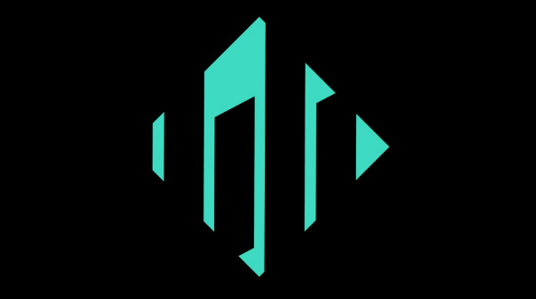

Quieres iniciarte en el trading
Quieres aprender con estructura, sin perder meses entre vídeos, conceptos sueltos y decisiones impulsivas.

CRZ Trader Reservar llamadaMentoría Swing Traders
Si entras tarde, dudas demasiado, saltas de estrategia en estrategia o no sabes cómo gestionar el riesgo, esta llamada te ayuda a detectar tu bloqueo principal y ordenar tu siguiente paso.
Para quién es
No importa si estás empezando, si ya has probado por tu cuenta o si solo quieres valorar una vía complementaria. La clave es entender dónde estás, qué riesgo puedes asumir y qué deberías trabajar primero.
Quieres aprender con estructura, sin perder meses entre vídeos, conceptos sueltos y decisiones impulsivas.
Repites errores, mueves stops, dudas en las entradas o necesitas un sistema más claro para operar.
Quieres comprender mejor inversión, riesgo y mercados para tomar decisiones con más criterio.
Quieres valorar si el trading o la inversión encajan con tu vida actual, sin dedicarte a ello a tiempo completo.
Objetivo de la llamada
La llamada no va de prometer rentabilidad ni darte señales. Va de revisar tu situación, localizar el principal bloqueo y valorar si la Mentoría Swing Traders tiene sentido para ti.
Reserva tu llamada
Te llevará menos de dos minutos. Tus respuestas me ayudan a entender tu caso antes de hablar y a que la llamada sea más directa y útil.
Google Forms
Deja tus datos, tu nivel actual y el principal problema que quieres resolver en trading, inversión o educación financiera.
El trading implica riesgo. Esta llamada es informativa y educativa, no asesoramiento financiero. Si el formulario no carga, abre la versión externa aquí.